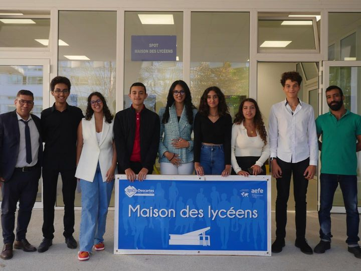

A PROPOS
Voici les membres du bureau de la MDL 22-23 :

- Selma Jalal, présidente
- Sara Safioui, vice-présidente
- Othmane Ameziane, secrétaire général
- Sara Dakir, secretaire adjointe
- Badr El Berri, chargé de communication
- Alae Talby, trésorière adjointe
- Mohammed Badr Benchekroun, chargé informatique
accompagnés de Mr Nabil Derj, Trésorier de la MDL
N'hésitez pas à nous contacter à l'adresse mdl@lycee-descartes.ma pour tout information !
La Maison des lycéens (MDL) est un outil au service des lycéens. Elle aide au développement de la vie culturelle au lycée et donne aux élèves l'occasion de s'engager dans des projets, de faire l'apprentissage de leur autonomie et de prendre des responsabilités importantes.
C'est aussi une association qui rassemble les élèves souhaitant s'engager dans des actions citoyennes et prendre des responsabilités au sein de l'établissement dans les domaines culturel, artistique, sportif et humanitaire.
Cliquez sur l'image ci-dessous pour accéder directement au Padlet
Vous trouverez une permanence d'adhésion à la MDL tout au long de l'année au bureau du spot (bureau MDL ET CVL ), de 12h à 13h30 , du Mardi au au Vendredi !